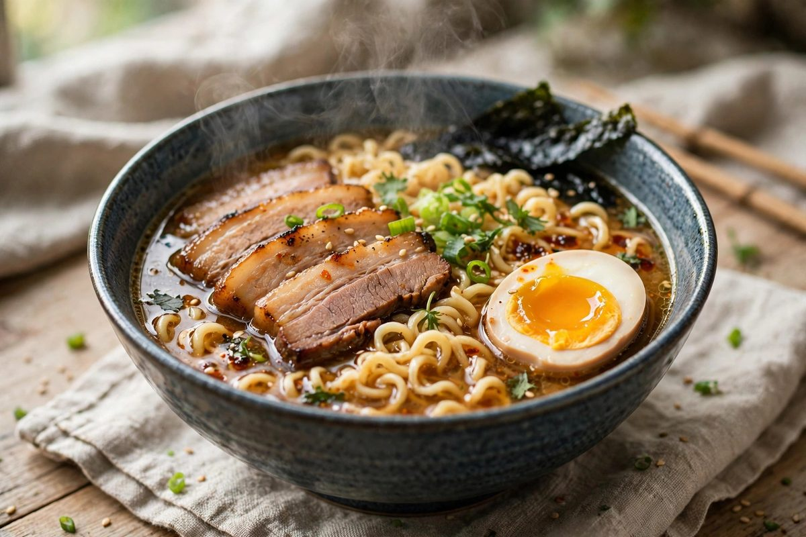

Ramen at Home — Broth, Noodles and Toppings
A practical guide to homemade ramen: broth choices, noodle cooking, toppings, and how to build a satisfying bowl.
What makes a bowl of ramen
A bowl of ramen has four parts that work together: broth, tare (the seasoning base), noodles, and toppings. The broth gives body, the tare gives saltiness and depth, the noodles give texture, and the toppings give contrast. Home ramen does not need to copy a restaurant's eighteen-hour tonkotsu. A clear chicken or dashi-based broth, a good tare, fresh noodles, and two or three well-chosen toppings can make an excellent bowl in under an hour. Understanding the four parts helps you adjust a recipe instead of following it blindly.
Choosing a broth
The simplest home broth starts with chicken stock, dashi, or a mix of the two. Simmer chicken bones or a whole chicken with onion, ginger, and spring onion, skim off any foam, and season lightly; the tare will add most of the salt later. A dashi base with soy sauce and mirin gives a lighter, cleaner bowl, while adding sesame oil or chilli oil gives richness. Avoid boiling the broth hard once the flavour is set, because that clouds it and dulls delicate flavours. Taste as you go, and remember the noodles will dilute the broth slightly, so it should taste a touch stronger than you think it needs to.
Tare: the seasoning base
Tare is a concentrated seasoning sauce placed in the bowl before the broth. The common types are shoyu (soy sauce), miso, and shio (salt). A simple shoyu tare is soy sauce warmed with mirin, sake, and a little sugar, sometimes with garlic or ginger. Miso tare is miso paste loosened with dashi and sesame. Put the tare in the bowl first, add hot broth, and stir; this keeps the seasoning evenly mixed. Start with two tablespoons per bowl and adjust. Getting the tare right matters more than any single topping, because it sets the flavour of the whole bowl.
Noodles and how to cook them
Fresh ramen noodles cook in two to four minutes; dried ones take a little longer, so follow the packet. Use a large pot of unsalted water and cook the noodles separately from the broth, because the starchy noodle water would cloud the soup. Drain them well and add them to the bowl immediately, loosening them with chopsticks so they do not clump. The right texture is firm with a little spring, not soft. If you like softer noodles, add thirty seconds; if you like them firm, take them out early. Timing matters because noodles keep cooking in the hot broth.
Toppings that earn their place
A soft egg is the classic topping. Bring eggs to room temperature, boil for six and a half minutes, then cool them in ice water for easy peeling. Chashu pork is traditional, but sliced roast chicken, firm tofu, or mushrooms work well too. Spring onions add freshness, sweetcorn adds sweetness, nori adds savoury depth, and a little chilli oil adds heat. Choose two or three toppings rather than everything at once. Arrange them neatly on top of the noodles so the bowl looks cared for, and serve it immediately while the noodles are at their best.
Putting the bowl together
Warm your bowls with hot water first so the soup stays hot. Add tare, then broth, then noodles, loosening them into an even mound. Place the toppings on top, add the halved egg last, and finish with spring onion or sesame seeds. Eat ramen soon after serving, starting with the noodles while they are springy, and slurping is normal and expected. At home, keep the parts separate until serving time if people eat at different times, and reheat the broth gently. A little practice with the sequence turns ramen night into a quick, reliable routine.
Frequently Asked Questions
Can I use instant ramen noodles for homemade ramen?
Yes. The dried noodle block is fine; discard the seasoning sachet and use your own broth and tare instead. It is a quick shortcut that still gives a much better bowl than the packet alone.
How do I make a soft ramen egg?
Boil room-temperature eggs for six and a half minutes, then chill in ice water for at least five minutes before peeling. For extra flavour, marinate peeled eggs in soy sauce, mirin, and water for a few hours.
What is the difference between shoyu, miso, and shio ramen?
Shoyu uses a soy-sauce tare and tastes savoury and clear. Miso uses fermented soybean paste and tastes rich and hearty. Shio uses salt and tastes light and delicate.